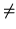
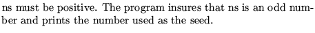

Input formatParameter definitions
SEED........(maximum 80 characters)
ns,
ns seed value
0 a seed is generated by the program.
 0 
Examples
The first example shows the case where the seed 37 is chosen.
The second example is a case where the computer clock will choose a seed.
SEED 37, seed 0,